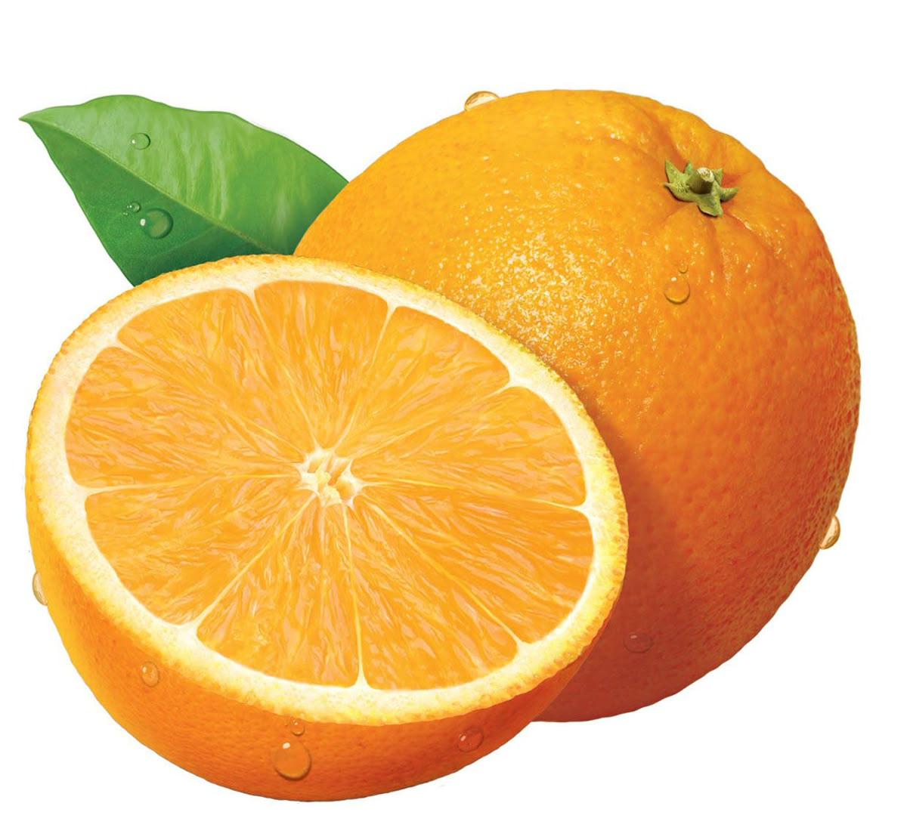

Orange

| Index |
|---|
| Short description |
| Nutritional value |
| Health benefits |
| Best time to eat |
| Who shoud avoid |
| Fun fact |
Short Description
Orange is a citrus fruit known for its refreshing taste and juicy texture. It is widely consumed fresh or as juice and is a major source of vitamin C.
Nutritional Value
| Nutrient | Amount |
|---|---|
| Calories | 47 kcal |
| Carbohydrates | 12 g |
| Dietary Fiber | 2.4 g |
| Vitamin C | 88% |
| Potassium | 181 mg |
| Antioxidants | Present |
Health Benefits
- Strengthens immunity
- Improves skin quality
- Supports heart health
- Improves iron absorption
- Helps hydration
Best Time to Eat
Oranges are best eaten in the morning or early afternoon.They refresh the body and boost immunity
Avoid eating oranges:
- On an empty stomach if acidity is present
- At night
Who Should Avoid
- People with acid reflux or ulcers
- Those with tooth sensitivity
- People with cold and cough, if eaten at night
Fun Fact
- Oranges were originally green, not orange
- Brazil is the largest producer of oranges
- Oranges are berries botanically